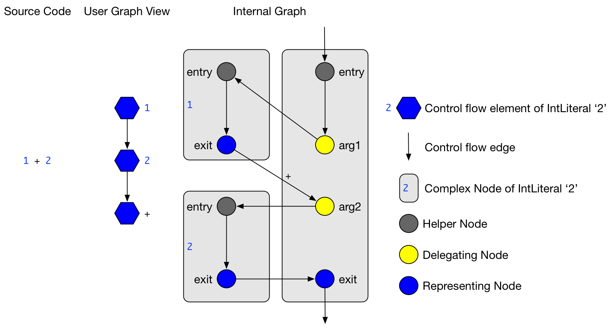
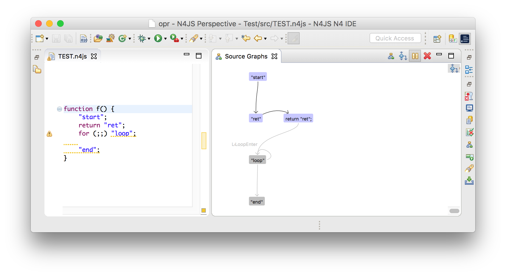
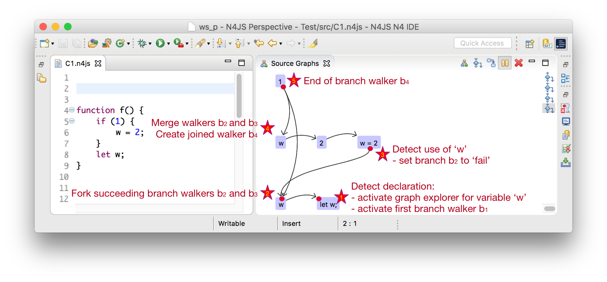

5. Flow Graphs
5.1. Flow graphs overview
In this chapter, the control and data flow analyses are introduced.
Since not all AST elements are relevant for the control or data flow analyses, a new marker class is introduced called ControlFlowElement.
All AST elements which are part of the control flow graph implement this class.
The term control flow is abbreviated as CF and hence ControlFlowElements are abbreviated as CF elements.
The following picture shows the control flow graph of the function f.

Figure 7. Control flow graph of a simple function
5.1.1. Internal graph
Every internal graph refers to a single control flow container.
The graph consists of nodes and edges, where the edges are instances of ControlFlowEdge, and nodes are instances of Node.
Additionally, a so called complex node is used to group nodes that belong to the same CF element.
- Internal graph
-
Control flow graphs are created based on the AST elements. Nevertheless, a fine-grained abstraction is used that is called internal graph. The internal graph reflects all control flows and data effects that happen implicitly and are part of the language’s semantics. For instance, the for-of statement on iterable objects forks the control flow after invoking the
next()method. This is done implicitly and not part of the written source code. Moreover, this invocation could cause side effects. These control flows and effects are reflected using the internal graph. To implement analyses that refer to AST elements, an API for flow analyses is provided which hides the internal graph and works with AST elements only. In the following, the term control flow graph refers to the internal graph. - Control flow container
-
At several places in the AST, an execution of statements or elements can happen. Obviously, statements can be executed in bodies of methods or function expressions. In addition, execution can also happen in field initializers or the
Scriptitself. Since all these AST elements can contain executable control flow elements (CF elements), they thus contain a control flow graph. In the following, these AST elements are called control flow containers or CF containers. - Nodes
-
Nodes represent complete CF elements or parts of them. For instance, simple CF elements like a
breakstatement are represented using only one node. Regarding more complex CF elements that introduce a more complex control flow, due to e.g. nested expressions, several nodes represent one CF element. All nodes of a single CF element are grouped within a complex node. - Edges
-
Edges reference a start and an end node which reflects a forward control flow direction, which is in the following called forward traverse direction. Traversing from end to start of an edge is thus called backward traverse direction. The so called next node is either the end node in context of forward, or the start node in context of backward traverse direction. Edges also reflect the reason of the control flow using a control flow type. The default control flow type is called
Successorand such edges connect two ordinary subsequent nodes. Other types likeReturnorBreakindicate control flow that happens due to return or break statements. A special control flow type isRepeatthat indicates the entry of a loop body. This edge is treated specially when traversing the control flow graph to avoid infinitive traversals of loops. - Complex node
-
The complex node always has a single entry and exit node, no matter the control flow it causes. For instance, although the for-statement can contain various control flows among its nested CF elements, its complex node still has a single entry and exit node. This simplifies concatenating subsequent complex nodes, since only their exit nodes have to be connected to the following entry node. Aside from exit and entry node, a complex node usually contains additionally nodes to represent the CF element. These nodes are connected by control flow edge so that their control flow lies within complex node. However, regarding nested CF elements, the control flow leaves and re-enters a complex node. To specify which CF element is nested, a delegating node (
DelegatingNode) is created that points to the nested CF element.
Consider that source code elements can be nested like expressions that have sub-expressions as in 1 + 2 * 3.
Also statements can contain other statements like in if (true) return;.
The design of the control flow graph deals with this nesting by mapping CF elements to several nodes.
All nodes of one CF element are aggregated into the complex node.

Figure 8. The source code of
1+2 creates an internal graph of three complex nodes to deal with nested integer literalsThe example in the figure above shows the internal graph produced by the source code 1+2.
Additionally, a simpler version of the internal graph is shown (called User Graph View), with which client analyses deal.
The user graph view is only a view on the internal graph, but does not exist as an own instance.
In the figure, the nesting of the integer literals becomes obvious:
The control flow edges of delegating nodes targets entry nodes of different CF elements.
Also, there are CF edges from the exit nodes of these nested CF elements to return the control flow.

Figure 9. Complex Node of for statement
In the above figure, the complex node of the for statement is shown. The details of the complex nodes of the nested CF elements (such as the initializer or the body statement) are omitted. The figure displays the control flow fork after the condition and also shows the Repeat edge that targets the for body. The node called Catch Node is used in situations when there are jumping control flows introduced for instance by a continue statement. The catch will will then be the target of an control flow edge that starts at the continue statement.
The graph of nodes and edges is constructed in the following order.
-
First, for every CF element a complex node and all its nodes are created. Also, the nodes within the complex node are connected according to their control flow behavior.
-
Second, all subsequent complex nodes are connected by connecting their exit and entry nodes. Moreover, nested complex nodes are connected by interpreting the delegating nodes.
-
Third, jumping control due to
return,throw,breakorcontinuestatements is computed. This is done by first deleting the successor edge of the jumping statement and introducing a new control flow edge that ends at the jump target.
5.1.2. Optimizations
The internal graph contains many nodes to simplify the graph construction. However, these nodes carry no relevant information when traversing the graph. Consequently, in an optimization step, they are removed from the graph for performance reasons.
A node removal for a node is done by replacing the path by the new path . These removals are done for delegating nodes that only have one incoming and one outgoing edge.
A second kind but similar optimization reduces the number of helper nodes that are used as entry nodes. In case a complex nodes consists only of exactly one entry and one exit node, both of these nodes are collapsed into one node. This remaining node then is the representing node of the AST element.
5.1.3. API for client analyses
To implement client analyses based on the control flow graph, the three classes GraphVisitor, GraphExplorer and BranchWalker are provided.
They provide the means to visit CF elements in a control flow graph and also to traverse single control flow paths.
The method N4JSFlowAnalyses#analyze can execute several client analyses in one run to maintain scalability.
5.1.3.1. Mapping from internal to AST elements
The API classes work with AST elements such as ControlFlowElement instead of the internally used graph classes ComplexNode, Node or ControlFlowEdge.
The mapping from internal classes to AST elements is done in the GraphVisitor class.
Note that the control flow graph has the following properties:
-
ExpressionStatements are not represented. Instead, only their expressions are represented. Nevertheless, the API can deal with calls that refer to expression statements, e.g. when requesting their successors. -
Control statements are also not represented in the graph, but can also be used in calls to the API. The reason is, that it is unclear when a control statement (e.g. a for loop) is visited exactly.
-
Since a
FlowEdgewhich connects twoControlFlowElements can represent multiple internal edges, it can have multipleControlFlowTypes.
5.1.3.2. Graph visitor
Graph visitors traverse the control flow graphs of every CF container of a script instance in the following two traverse directions:
-
Forward: from the container’s start to all reachable CF graph elements.
-
Backward: from the container’s end to all reachable CF graph elements.
In each traverse direction, the graph visitor visits every reachable CF element and edge. Note that neither empty statements nor control statements are part of the control flow graph. The order of visited CF elements is related to either a breadth or a depth search on the CF graph. However, no specific order assumptions are guaranteed.

Figure 10. The CF elements
"loop" and "end" are dead code and displayed in grey.5.1.3.3. Graph explorer
Graph visitors can request a graph explorer to be activated under specific conditions related to the client analysis. A graph explorer is the start point to analyze control flow branches. The first control flow branches is started directly at the graph explorer’s creation site, but of course this first branches might fork eventually. The graph explorer keeps track of all forked branches that originate at its activation site. It also provides the means to join previously forked branches again.
5.1.3.4. Branch walker
With every graph explorer, a branch walker is created that traverses the control flow graph beginning from the activation site of the graph explorer.
On every such branch, the two visit methods of CF elements and edges respectively, are called in the order of the traverse direction.
Every time the branch forks, the fork method of the branch walker is invoked and creates another branch walker which will continue the traversal on the forked branch.
The fork method can be used to copy some path data or state to the newly forked branch walker.
Note that every edge is always followed by the branch walker except for repeat edges which are followed exactly twice.
The reason to follow them twice is that first, following them only once would hide those control flows that re-visit the same CF elements due to the loop.
Second, following them more than twice does not reveal more insights, but only increases the number of branches.
When control flow branches merge again, for instance at the end of an if-statement, two or more branch walkers are merged into a new succeeding one.
The graph explorer provides the means to do this.
In case a CF element has no next elements, the branch walker terminates.
5.1.3.5. Example 1: Compute string for each path
Let’s assume that we want to compute all control flow branches of a function and use the client API for that.
The function f() in the following code snippet has four control flow branches: 1 → 2, → 3 →, → 4 → and 5.
Function
f() has four control flow branches.function f() {
1;
if (2)
3;
else
4;
5;
}To compute these control flow branches, the class AllBranchPrintVisitor extends the GraphVisitor.
Already in the method initializeMode() a graph explorer is activated.
Note that the method requestActivation() can be understood as a addListener method for a listener that listens to visit events on nodes and edges.
Immediately after the activation request, the first branch walker is created in the method firstBranchWalker().
The first visited CF element of the branch walker will then be the expression 1.
It is formed into a string and added to the variable curString.
After expression 1, the flow edge from 1 to 2 is visited.
This will concatenate the string → to the path string.
Variable curString will eventually hold the branch string like 1 → 2.
Since the control flow forks after 2, the method forkPath() is called and creates two new instances of a branch walker.
These new instances succeed the the first branch walker instance and each traverses one of the branches of the if-statement.
When the if-statement is passed, these two branches are merged into a new succeeding branch walker.
After all branch walkers are terminated, the graph explorer and graph visitor are also terminated.
The method getBranchStrings() collects all four computed strings from the variable curString of all branch walkers.
Implementation of a graph visitor that computes all control flow paths
class AllBranchPrintVisitor extends GraphVisitor {
protected void initializeMode(Mode curDirection, ControlFlowElement curContainer) {
super.requestActivation(new AllBranchPrintExplorer());
}
class AllBranchPrintExplorer extends GraphExplorer {
class AllBranchPrintWalker extends BranchWalker {
String curString = "";
protected void visit(ControlFlowElement cfe) {
curString += cfe.toString();
}
protected void visit(FlowEdge edge) {
curString += " -> ";
}
protected AllBranchPrintWalker forkPath() {
return new AllBranchPrintWalker();
}
}
protected BranchWalker joinBranches(List<BranchWalker> branchWalkers) {
// TODO Auto-generated method stub
return null;
}
protected BranchWalkerInternal firstBranchWalker() {
return new AllBranchPrintWalker();
}
}
List<String> getBranchStrings() {
List<String> branchStrings = new LinkedList<>();
for (GraphExplorerInternal app : getActivatedExplorers()) {
for (BranchWalkerInternal ap : app.getAllBranches()) {
AllBranchPrintWalker printPath = (AllBranchPrintWalker) ap;
branchStrings.add(printPath.curString);
}
}
return branchStrings;
}
}5.1.3.6. Path quantor
Graph explorers are typically used to reason on all branch walkers that start at a specific location.
For instance, such a reasoning might determine whether some source element is reachable or whether a variable is used or not.
To simplify this, quantors are provided.
Since branch walkers originating from a single activation point can fork, the reasoning has to include all these forked branch walkers.
Hence, graph explorers are instantiated using a quantor which can be either For All, At Least One OR None that refers to all branches.
After all branch walkers of an explorer are terminated, the explorer is regarded as either passed or failed.
Paths also can be aborted manually using the methods pass() or fail().
When pass or fail are used, the graph explorer might be terminated in the following cases:
-
If the quantor of the graph explorer is For All, and
fail()is called on a branch walker. -
If the quantor of the graph explorer is At Least One, and
pass()is called on a branch walker.
Additionally, a graph explorer can be aborted manually by canceling all its branches.
5.1.4. Control flow analyses
5.1.4.1. Dead code analysis
The dead code analysis uses the graph visitor in all four modes and collects all visited CF elements. The collected CF elements are saved separately for every mode. After the graph visitor is terminated, the unreachable CF elements are computed like follows:
-
CF elements, that are collected during forward and catch block mode are reachable.
-
CF elements, that are collected during islands mode are unreachable.
-
CF elements, that are only collected during backward mode, are also unreachable.
In a later step, the unreachable elements are merged into unreachable text regions that are used for error markers.
5.2. Dataflow
5.2.1. Dataflow graph
The data flow graph provides means to reason about symbols, effects, data flow, aliases and guards in the control flow graph.
The main classes of the data flow API are DataflowVisitor and Assumption.
- Symbol
-
Symbols represent a program variable in the sence that it represents all AST elements, that bind to the same variable declaration (according to scoping). The terms symbol and variable are used synonymously.
- Effect
-
Effects are reads, writes and declarations of symbols. For instance, a typical CF element with a write effect is an assignment such as
a = null;. Every effect refers to a single symbol and graph node. The following effects are provided:-
Declaration: is the declaration of a variable.
-
Write: is the definition of a variable’s value, which is typically done with an assignment.
-
Read: is the read of a variable’s value, which could happen when passing a variable as an argument to a method call.
-
MethodCall: is the call of a property method of a variable.
-
Note that the term value use means either write or method call of a variable. The term value definition means that a variable is written.
- Data flow
-
The term data flow is used for assignments of all kind. For instance, the assigments
a = b,a = 1,a = nullor evenfor (let [a] of [[0],[undefined]]);are data flows. The data is always flowing from the right hand side to the left hand side. - Alias
-
Due to data flow, other symbols can get important for an analysis. For instance, the data flow
a = bmakesbimportant when reasoning aboutasince the value ofbis assigned toa. In the API isbtherefore called an alias ofa. - Guard
-
Guards are conditions that appear in e.g.
it-statements. For instance, a typical guard is the null-check in the following statement:if (a == null) foo();. For every CF element, guards can hold either always, never or sometimes. Note that the null-check-guard always holds at the method invocationfoo();. DataflowVisitor-
The class
DataflowVisitorprovides means to visit all code locations where either effects happen or guards are declared. For instance, when a variable is written, the callback methodDataflowVisitor#visitEffect(EffectInfo effect, ControlFlowElement cfe)gets called. In case a guard is declared, the callback methodvisitGuard(Guard guard)gets called. Assumption-
The class
Assumptionprovides means to track the data flow of a specific symbol from a specific code location. For instance, assumptions are used to detect whether the symbolsin the property accesss.propis or may be undefined. In this example, the assumption symbol issand its start location is the property access. From there, the data flow ofsis tracked in backwards traverse direction. Also, (transitive) aliases ofsare tracked. In case a data flow that happens onsor its aliases, the callback methodholdsOnDataflow(Symbol lhs, Symbol rSymbol, Expression rValue)is called. For every effect that affectssor one of its aliases, the callback methodholdsOnEffect(EffectInfo effect, ControlFlowElement container)is called. And finally, for all guards that hold always/never at the start location regarding symbols, the callback methodholdsOnGuards(Multimap<GuardType, Guard> neverHolding, Multimap<GuardType, Guard> alwaysHolding)is called.
5.2.2. Dataflow analyses
5.2.2.1. Def→Def / Def→Nothing analysis
A Def→Def analysis finds all defintions of a variable that are always a predecessor of another definition. Its result is a set of all obsolete definition sites.
A Def→!Use analysis finds all definitions of a variable that are not followed by either a read or a method call. These definition are therefore obsolete and can be removed.
Both of these analyses are performed in traverse direction Forward.
5.2.2.2. Def|Use←Decl analysis
A Def|Use←Decl analysis finds all preceding def or use sites of a declarations of a specific variable. The paths might contain other defs or uses of the same variable. In case such paths exists, the variable is used before it is declared. This analysis is done in traverse direction Backward.

Figure 11. Finding use or def sites can be done using the graph visitor in traverse direction Backward.
In the above figure a graph visitor would visit all CF elements.
When it visits the declaration in line 8 (let w), it will activate a graph explorer (star 1 in the figure) for variable w.
Now, the first branch walker is created and walks the control in backward traverse direction.
When encounters the exit node of the if-statement, it will create two forked branches and .
Now, enters then the branch of the if-statement (star 2), while traverses directly to the condition of the if-statement.
Next, visits the def site of variable w (star 3).
This means, that there exist a def site of w before w was declared and hence, an error should be shown.
Since there could exist more cases like this, neither the branch walker nor the graph explorer are terminated.
When reaching star 4, the two branch walkers and are joined and the follow-up branch walker is created.
At star 5, the end the CF container is reached and the will be terminated.
After all branch walkers are terminated, the graph explorer for the declaration site of variable w is evaluated:
All use or def sites, that were reachable should be marked with an error saying that the declaration has to be located before the use of a variable.
Note this analysis is currently implemented as a control flow analysis since it does not rely on guards, aliases. Also, it only relies on local variables and hence does not need the symbols that are provided by the data flow API.